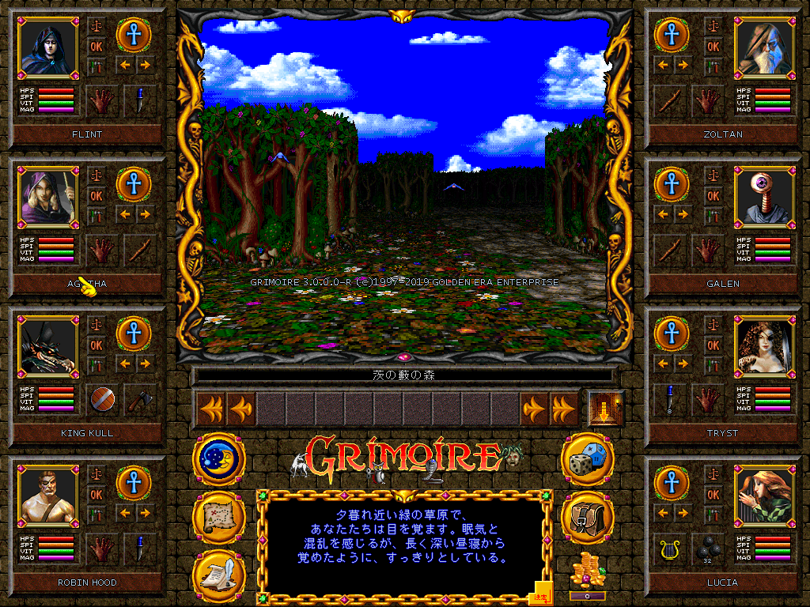
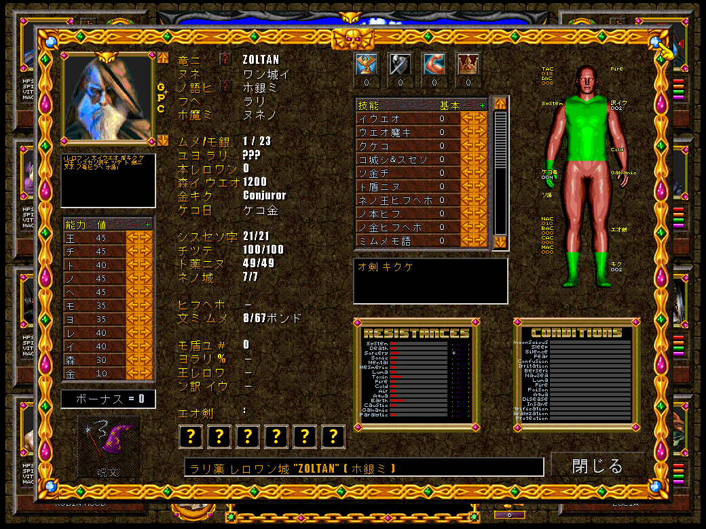
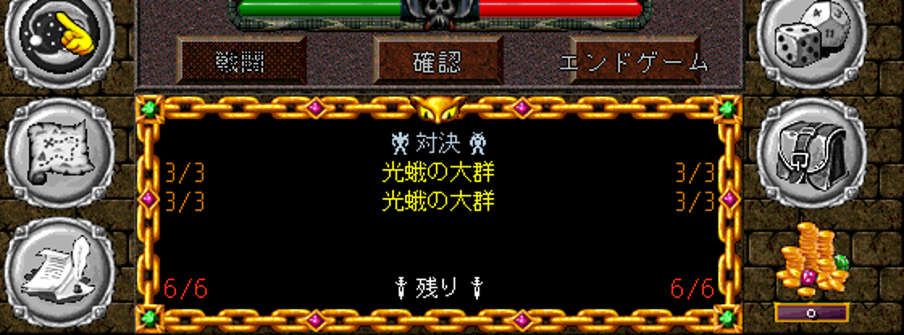
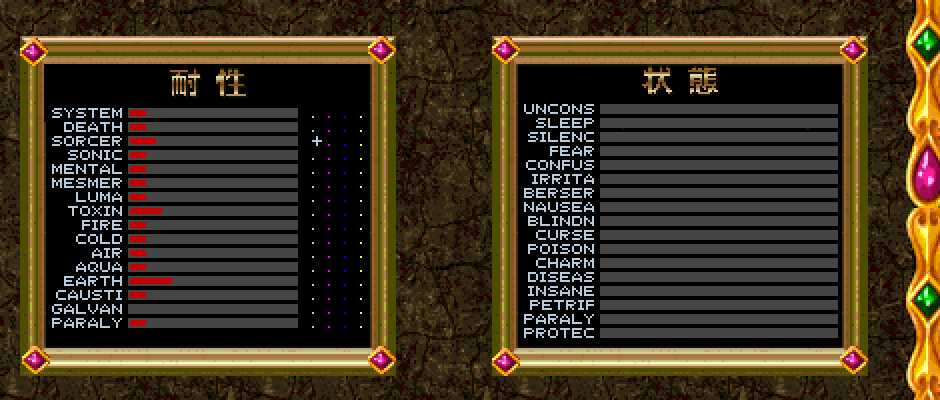

Grimoire: Heralds of the Winged Exemplar 日本語化パッチ
Steam 版 Grimoire（3.0.0.0-R）を日本語で遊べるようにする、非公式のファンメイドパッチです。 ゲームのフォルダにファイルを置くだけで日本語になり、消せば英語に戻ります。
入れ方
- Steam のライブラリでゲームを右クリックし、「管理」→「ローカルファイルを閲覧」でゲームのフォルダ（Grimoire.exe があるフォルダ）を開きます。
- ダウンロードした zip の中身（
version.dll、grimjp.ini、grimjpフォルダ）を、ゲームのフォルダにそのままコピーします。 - ゲームを起動します。初めての起動のときだけ、日本語版のデータ（約 80MB）を
grimjp\cacheに作ります。数秒かかることがあります。
元のゲームのファイル（Grimoire.exe や BUNDLE-Z.RSF）は書き換えません。配布物に原作のデータは入っていません。
外し方
ゲームのフォルダから version.dll、grimjp.ini、grimjp.log、grimjp フォルダを消すと、英語版に戻ります。
遊ぶときの注意
- NPC への質問は、原作どおり英単語で打ち込みます。会話の中では「黒の魔導士（LICH）」のように、尋ねられる英単語を添えています。
- 一部の狭い一覧（状態異常・耐性の小さな文字）は、日本語が入りきらないため英語のままです。
- 戦闘で出る魔物の名前は、ゲームの文字数の制限に合わせて短くしたものがあります（例：ヴァンガード兵 → 前衛兵）。
- 「日本語化データを使えませんでした」と出たときは、ゲームの版が違うかファイルが壊れています。英語のまま起動するので、Steam で「ゲームファイルの整合性を確認」をしてから試してください。
画面




翻訳について
本文の翻訳には AI（Anthropic 社の Claude）を使い、約 3,700 語の用語集で名前や用語を揃えています。 誤訳や不自然な訳が残っているかもしれません。気づいたことは GitHub の Issues で教えてください。
ライセンス・クレジット
- 小さい文字の表示に美咲フォント（Copyright © 2002-2021 Num Kadoma）を使っています。そのほかの文字は Windows の MS ゴシックで表示します。
- Wiki 翻訳は、Grimoire ファン Wiki の記事の日本語訳で、CC BY-NC-SA 4.0 で公開しています。
- このパッチの使用は自己責任でお願いします。